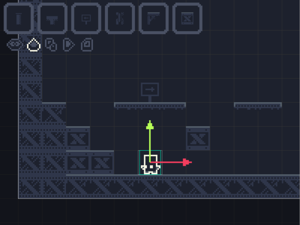

Very small description
Open source - Pixel art - 2D Platformer - video game - made using Processing !
Objective
Project 16x16 is game that everyone can develop, the goal is to have a finished game with a story and cool levels, made by the community! I started the project on my own, and here are the things I made :
- Physics
- Player
- Level Editor
- Item inventory
- translation arrows
- Level bounding box
- Save/Load (JSON)
- Playable
- (Part) of projectiles and mirror bloc functionnality
- (Part) of particle system
So the ‘framework’ of the game is quite advanced, but here are exemple of things that could be added:
- Entities
- Projectiles
- Zooming
- Multiple layers in editor for : background, middle and front objects
- Object ‘connection’, for exemple when projectile touches glass thing, open platforms
- Story
- Gameplay
- Level design
- Main menu, game UI, pause Menu…
Screenshot of project at its current state

Join the project
The project is on GitHub here : https://github.com/Stephcraft/Project-16x16